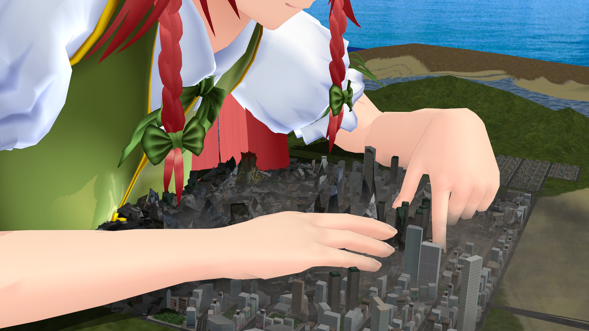

モデルをガタガタにします。街モデルに適用すると破壊された街っぽくすることもできます。当たり判定付きなので、対象のモデルに当たった場所だけ破壊されたような表現ができます。
使い方
わりと使い方が難しいのでよく読んで利用してください。
- エフェクト割当でガタガタさせたいモデルに GatagataEx.fx を適用します。
- GatagataExController.pmx を MMD に読み込みます。
- GatagataExController が選択された状態で GatagataExController設定例.vmd を読み込みます。
- エフェクト割当の HitRT タブを開き、当たり判定を持たせたいオブジェクト(破壊する側)だけにチェックが入った状態にします。
これだけで最低限動く状態になります。あとはシーンに合わせて以下の調整をしてください。ただし、シーンの 0 フレーム目は破壊状況が強制的に初期化されるため、動作をチェックするときは 1 フレーム目以降で行ってください。
- GatagataExController の Visualize を 1 にすると当たり判定を行うエリアが表示されます。調整中はこの状態にしておくと便利でしょう。調整が終わったら 0 に戻してください。
- GatagataExController の Reset を 1 にすると破壊状況がリセットされます。きれいな状態にしたいときはこの機能を使ってください。
- Center というボーンを動かすと当たり判定を行うエリアを移動できます。回転はできません。
- Size ボーンの x 座標を動かすと当たり判定エリアのサイズを変更できます。
- Ymin, Ymax の y 座標を動かすと当たり判定が存在する Y 座標の範囲を変更できます。y 座標以外は無視されるので注意してください。
- 当たり判定を持つモデルのサイズを Scale エフェクトで変更してる場合、HitRT タブでそのモデルに割り当てられているエフェクトを HitTest.fx から HitTestScale.fx に変更してください。
パラメータ
このエフェクトが実際にやっているのは以下の３つです。
- Perturb: モデルの頂点をランダムにずらす
- YCompression: モデルをY方向に圧縮する
- Distortion: モデルの法線ベクトルをランダムに歪める
これら3つの効果を GatagataExController のボーンと表情操作を使って調整することができます。
- PerturbWidth
- モデルの頂点のずれの大きさです。
- PerturbPeriod
- モデルの頂点のずれの変化の激しさを決めます。(といってもイメージわかないと思うので実際に PerturbPeriod+ をいじってみるといいかも)
- YCompression
- モデルがY方向にどれぐらい圧縮されるかを決めます。YCompression- を 1.0 にすると全く圧縮されなくなります。
- YVariance
- 圧縮率がどれぐらいの範囲でばらつくかを決めます。YVariance- を 1.0 にすると全くばらつきません。
- DistortionPeriod
- 法線ベクトルの歪みの変化の激しさを決めます。これも試してみると何が起こるかわかるかと思います。
- DistortionAngle
- 法線ベクトルがどれぐらい歪むかを決めます。
- AmbientLight
- 環境光の強さを調整します。モデルが暗いなと思ったらこれで調整してください。
- ReduceLight
- 破壊状態のときに環境光の強さを減らすことができます。これを大きくするほど光の減少幅が大きくなります。
更新履歴
- 2021-08-29 rev.1
- 公開
利用条件
このエフェクトは MIT License の下に配布されています。